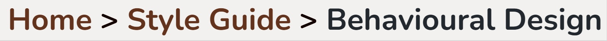
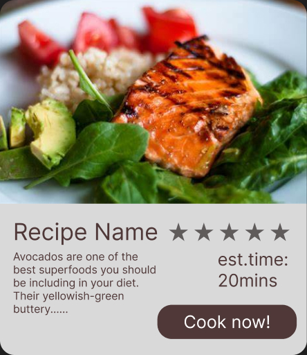
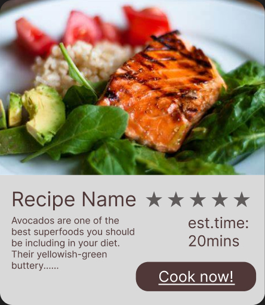
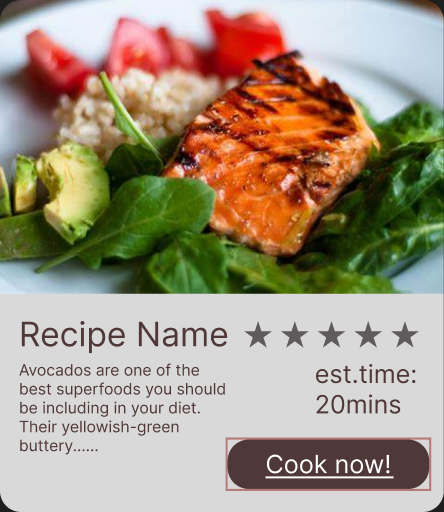
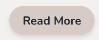
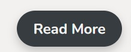
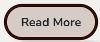
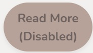

Behavioural Design
Behavioural design focuses on the user's experience and how they interact with the product. It aims to create a seamless and intuitive experience that encourages users to engage with the product in a meaningful way. This includes considering factors such as usability, accessibility, and user feedback.
Link
This is an example of a link that could be used to navigate to another page or section of the website. The link is styled to stand out and is easy to identify as a clickable element. The triangle shape in the right side is used to indicate that the link is interactive and can be clicked on. The link shape is a rounded rectengle which create a friendly feelings, harmony with the other elements of the website. The link is also designed to be accessible, with a clear hover state and focus state to indicate when it is active.
.jpg)

Hover State

Focus State
Menu
There are two version of Menu for the website, the mobile and desktop version.
Mobile Menu
The mobile version is designed to use on smaller
screens, since small screens has less space, the menu is
designed to hide on the bottom right corner of the
screen.
It is a hamburger menu with a three line icon,
which is a common design pattern for mobile navigation.
When the user clicks on the icon, the menu expands to
show the available options.
The menu is in a
rounded rectangle shape, which creates a
friendly and approachable feelings.
There is a
color gradient to show each level of the menu, which is a common design pattern for mobile
navigation.
With a
search icon
on left side of the menu to allow users to click and
link to the search engine for specific content.

Normal State

Opened State

Expanded State
Desktop Menu
The desktop version is designed to use on larger
screens, since large screens has more space, the menu is
designed to be a horizontal navigation bar at the top of
the page.
The menu is also in a rounded rectangle shape,
which links to a
friendly and approachable feelings.
There is also a color gradient serve the same
purpose as the mobile menu.
With a
functional search bar
on left side of the menu to allow users to search for
specific content on the website.
.jpg)
Navigation
The breadcrumbs navigation bar helps users understand their current location within the website's hierarchy. It provides a clear path back to previous pages (by clicking the name) and allows users to navigate easily between sections of the site.
When the mouse is on the breadcrumb, the text will be underlined to indicate that it is clickable.

Normal State

Hover State
Card
As the website is designed to be a recipe sharing
platform, the designed card is used to display the
recipe information.
The card is designed to be
visually appealing and easy to read, with a clear
hierarchy of information.
There is also a button
(cook now) which
encourge
users to click and link to the recipe page for more
information.
It is also designed to be
accessible, with a clear hover state and focus state to indicate
when it is active.

Normal State

Hover State

Focus State
Icon
Since the icon is used to represent a specific meaning or function, it is important that the icon is clear and easy to understand.
The icon is designed to be mostly single color and simple for user to identify.
As the website is designed to be a recipe sharing platform, the icon is mainly used in the recipe page.
The icon is mostly serve as a text alternative which can let the user follow the recipe easily.
Measurement
Mainly used in the recipe page for measuring the volume of water/liqid needed.
ingredient
Mainly used to states out the ingredient that require for the recipe.
Caution
Since user may be have allergy to some food, this icon is used to remind the user to be careful when using the recipe.
Measurement
Another measurement icon (for solid ingredient)
Tips
The icon give the user the to recive tips from the website.
More information
User can get more information when they see and this icon.
Button
This is an example of a button that could be used to
navigate to another page or section of the website. The
button is styled to stand out and is easy to identify as
a clickable element.
The shape is a rounded rectengle which create a
friendly
feelings, harmony with the other elements of the
website.
The button is also designed to be
accessible, with a
hover state and focus state
to indicate when it is active. Also with a
disabled state
when the button is turned off.
Button State Example

Normal State

Hover State

Focus State

Disable State
Button Example
Informative button
Affordance: The rounded corners and bold
text signify that this is a clickable
element.
Feedback: The hover and
active states provide visual feedback,
ensuring users know their action is
registered.
Signifiers: The use of the
primary color aligns with
the website's branding, making it stand out
as a key action button.
Action button
Affordance: The larger size and distinct color scheme make the button more attractive. Feedback: Hover and active states provide immediate visual cues, reinforcing interactivity. Signifiers: The use of a slightly different radius and size differentiates it from the primary button while maintaining consistency with the color scheme.
Search Button
Affordance: The inclusion of a magnifying glass icon clearly indicate its purpose as a search button. Feedback: Hover and active states provide immediate feedback, ensuring users know their input is being processed. Signifiers: The use of the accent color for the text and icon aligns with the website's visual hierarchy, making it intuitive for users.
Forms
This is an example of a form that could be used to collect user information for a community engagement initiative. The form includes fields for the user's name, email address, message, and file upload. It also includes a submit button (Join the community) to send the information. The button is not only a "submit" button, the call-in-action also encourage user to join the community of the website.